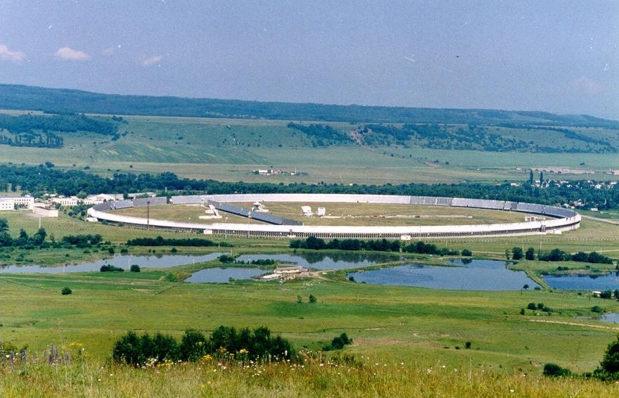
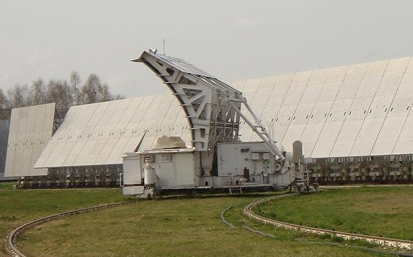

Инструмент
Радиотелескоп РАТАН-600 и солнечный комплекс
Антенна, режим «Южный сектор + Плоский отражатель», диаграмма направленности и многоволновая приёмная аппаратура для наблюдений Солнца.
Антенна

РАТАН-600 — один из двух основных инструментов Специальной астрофизической обсерватории РАН. Антенна — кольцо диаметром 576 м из 895 отражающих элементов размером 2 × 11,4 м. Прообраз — Большой Пулковский радиотелескоп.
| Точность координат | 1–10″ |
|---|---|
| Предел по плотности потока | 0,5 мЯн |
| Предел по яркостной температуре | 0,05 мК |
| Время слежения (Юг + Плоский) | до 4 часов |
Кольцо разделено на четыре независимых сектора по 225 элементов — Северный, Южный, Западный и Восточный; три из них могут одновременно работать по разным программам. В фокусе стоят подвижные кабины со вторичными зеркалами и приёмной аппаратурой (облучатели № 1, 2, 3); по круговым рельсовым путям они устанавливаются в 12 фиксированных азимутах, сейчас для наблюдений доступны четыре: 0, 30, 180 и 270°.
Режим для наблюдений Солнца
Регулярные наблюдения Солнца ведутся на Южном секторе с Плоским отражателем — это перископическая система Крауса. Облучатель передвигается по дуговым рельсам, что даёт:
- квазисопровождение Солнца в течение 4 часов — серии сканов с разных азимутов (многоазимутальный режим);
- синтез двумерных изображений Солнца в периоды летнего и зимнего солнцестояния.


Наблюдения — около местного полудня, 9:00 UT ± 2 часа: одномерные сканы на 30–120 длинах волн в диапазоне 1,32–40 см, в левой и правой круговой поляризации. Подробнее о самом сеансе — на странице Наблюдения и данные.
Диаграмма направленности
Диаграмма ножевая: узкая по горизонтали и широкая по вертикали. Приближённо:
θгор (угл. с) ≈ 0,85 · λ (мм) θверт (угл. мин) ≈ 0,75 · λ (мм)
На 3 см (λ = 30 мм) это около 26″ по горизонтали и 22′ по вертикали. Поэтому источник на скане — проекция всей вертикальной полосы диска, а поток источника вдали от центра диаграммы по вертикали нужно поправлять (поправка k в таблице Танаки–Эноме). Точный расчёт с учётом облучателей — методом А. Н. Коржавина, см. Вычисления.
Приёмный комплекс СПКВР
С 2016 г. работает спектрально-поляризационный комплекс высокого разрешения (СПКВР) повышенного динамического диапазона: диапазон 3–18 ГГц перекрыт с частотным разрешением 1% и дополнен 10 широкополосными каналами по 1500 МГц.
| Полный диапазон | 0,75–18 ГГц: НЧ 0,75–3 ГГц (идёт модернизация противопомеховой системы), ВЧ 3–18 ГГц |
|---|---|
| Каналы | 80 × 2 узкополосных + 10 × 2 широкополосных, по R и L |
| Спектральное разрешение | 1% (100 МГц) и 15% (1500 МГц) |
| Скорость регистрации | 0,2 с |
| Шумовая температура | 300 K |
| Динамический диапазон | > 1 000 000 |
| Межканальная развязка; развязка RH/LH | > 20 дБ; > 20 дБ |
| Эллиптичность | 1–5% |
| Облучатель | синусного типа |
Что это даёт для исследований Солнца
- многооктавное перекрытие 0,75–18 ГГц и параллельный спектральный анализ с разрешением 1%;
- поляризационный анализ: предельная степень поляризации около 0,02–0,1% на отдельных волнах и 0,5–1,5% в широком спектре;
- большая эффективная площадь (400–1000 м²) и чувствительность около 0,01 с.е.п. на диаграмму;
- временной анализ в многоазимутальном режиме — 1 скан за 4 минуты в течение 4 часов;
- регулярный мониторинг — около 80% дней в году, и карты азимутального синтеза на десятках волн.
История многоволновых наблюдений
- 1975начало наблюдений Солнца на многих частотах: 5 волн сантиметрового диапазона — 2,0; 2,3; 2,7; 3,2 и 4,0 см.
- далее9 волн с дециметровым диапазоном: добавлены 6, 13, 20 и 30 см.
- 1991всеволновые наблюдения с почти полным перекрытием 1,7–31,6 см.
- 2009–2011новая система регистрации на 112 каналов (0,75–18 ГГц), новые облучатели.
- 2016СПКВР повышенного динамического диапазона: 80 + 10 каналов в каждой поляризации.
Географические координаты
Центр радиотелескопа, по астрометрическим наблюдениям января 1968 г.:
| Широта | 43° 49′ 52,75″ ± 0,16″ |
|---|---|
| Долгота | 41° 35′ 31,5″ в. д. (2ч 46м 22,1с) |
| Высота над уровнем моря | 970 м |
Литература
- Хайкин С. Э. и др. Радиотелескоп РАТАН-600. Известия ГАО, № 188, 3–11 (1972), и другие статьи этого номера.
- Parijskij Yu. N., Korol'kov D. V. The RATAN-600 radiotelescope. Brief history and description. In: Experiment Cold: The First Deep Sky Survey With The RATAN-600 Radio Telescope (1985).
- Хайкин С. Э., Кайдановский Н. Л., Есепкина Н. А., Шиврис О. Н. Большой Пулковский радиотелескоп. Известия ГАО АН СССР, 164, 3–26 (1960).
- Богод В. М. Радиотелескоп РАТАН-600 в 24 цикле солнечной активности. I. Новые возможности и задачи. Астрофиз. бюлл., 66, № 3 (2011).
- Богод В. М., Алесин А. М., Перваков А. А. II. Многооктавный спектрально-поляризационный комплекс высокого разрешения для солнечных исследований. Астрофиз. бюлл., 66, № 3 (2011).
- Тохчукова С. Х., Коржавин А. Н., Богод В. М., Курочкин Е. А., Шендрик А. В. Расчёт горизонтального размера диаграммы направленности РАТАН-600 в режиме «Южный сектор с Плоским отражателем» с учётом параметров первичных облучателей. Астрофиз. бюлл., 69, № 3, 377 (2014).
- Майорова Е. К. Расчёт диаграммы направленности РАТАН-600 с учётом дифракционных эффектов в режиме «Южный сектор с Плоским отражателем». Астрофиз. бюлл., 66, № 1, 97–117 (2011).